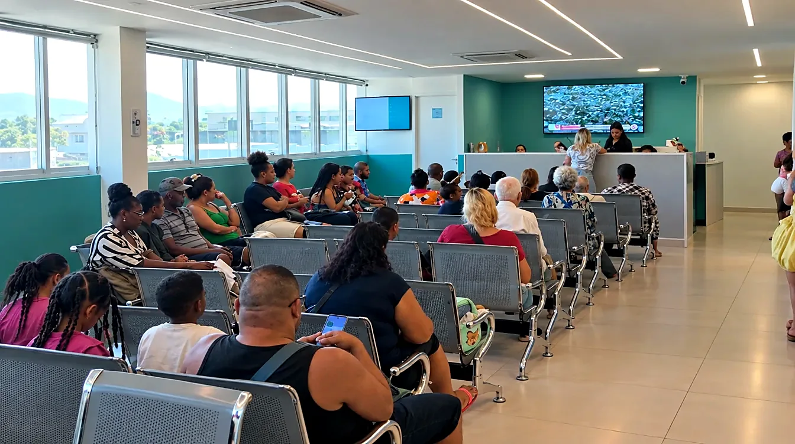
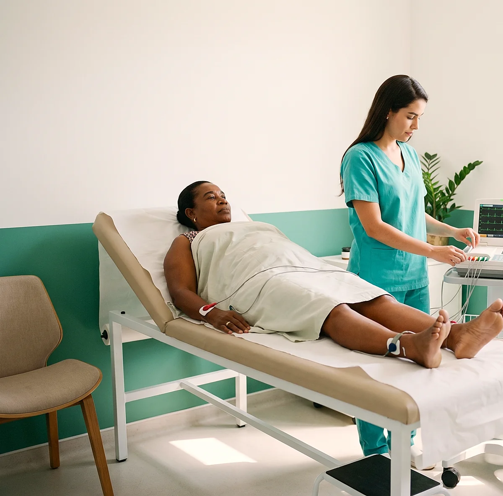
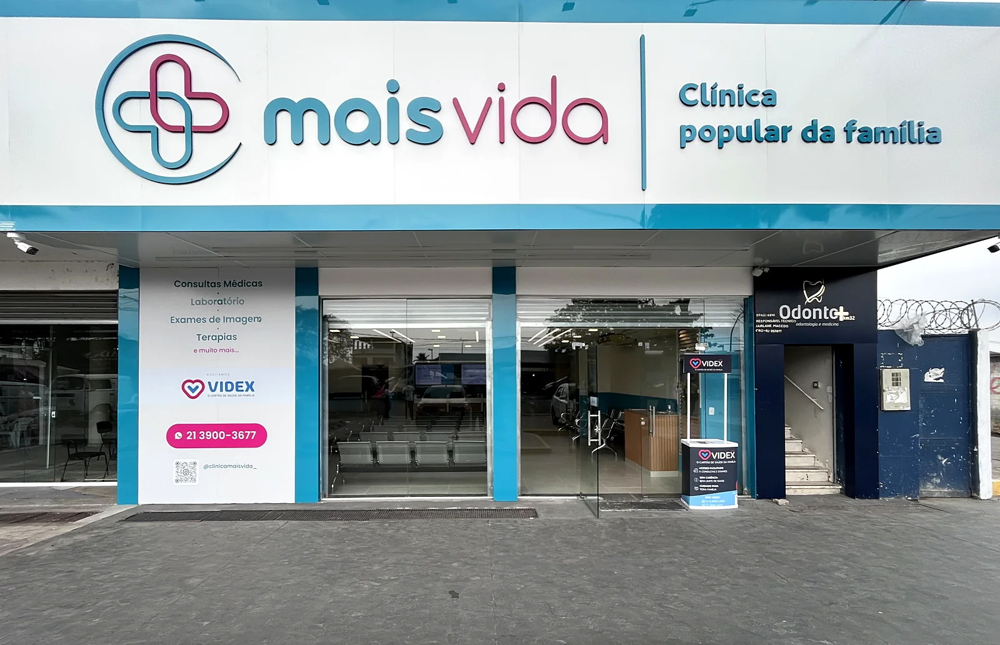
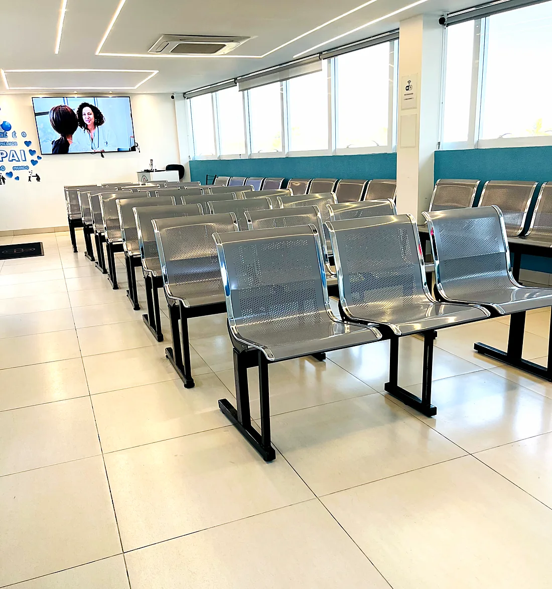
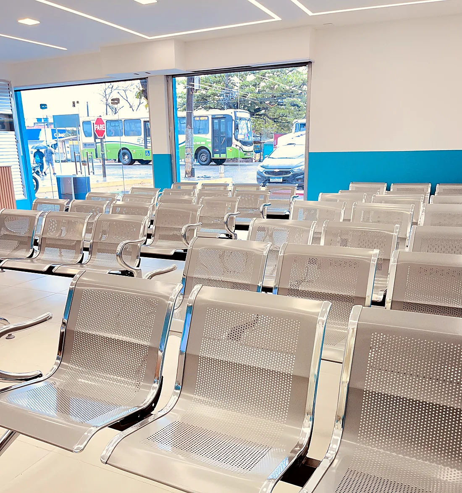
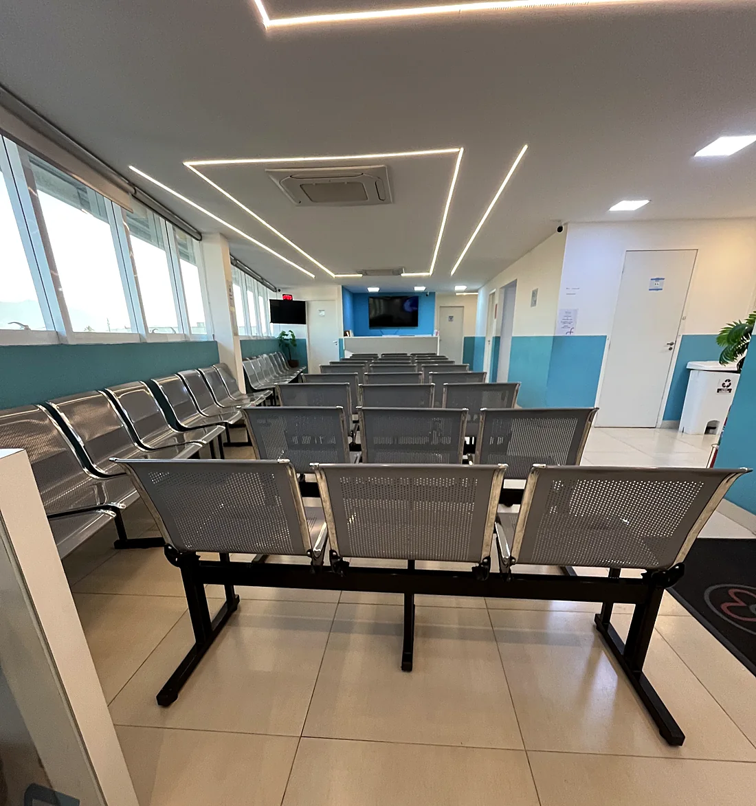
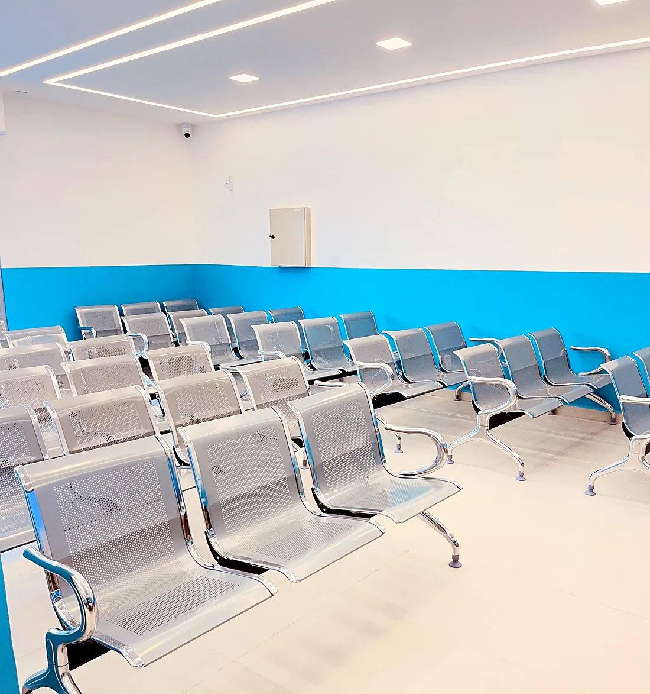
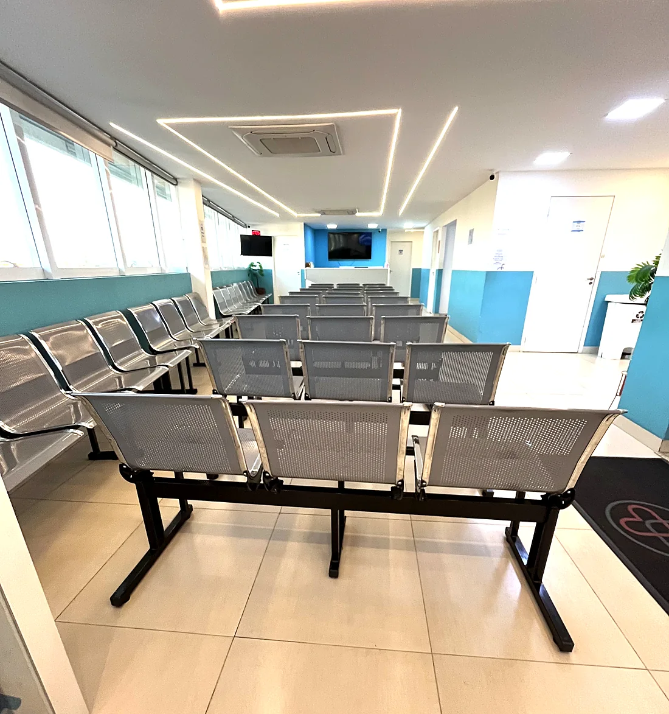

Acolhimento de verdadeA recepção e a enfermagem são as mais elogiadas nas avaliações, muitas vezes pelo nome.
Consulta particular com cardiologista em Nova Iguaçu. Os principais exames do coração são feitos na própria clínica e você sabe o valor de tudo antes de marcar.
A clínica é referência em Nova Iguaçu desde 2014, e cresceu por indicação de quem foi atendido.

Você marca pelo WhatsApp em poucos minutos, sem ficar pendurado no telefone.
Sem guia, sem autorização, sem carência. Você paga só a consulta, pelo valor que já sabia.
Mais de 1.500 avaliações de pacientes.
Muita coisa se resolve numa ida só, sem marcar exame do outro lado da cidade.
Especialistas em 19 áreas e uma equipe que explica, escuta e acompanha. Por isso o paciente volta e traz a família.
Duas unidades em Nova Iguaçu, Cabuçu e KM 32. Sem precisar ir ao centro.
Pressão alta quase nunca dói. Muita gente só descobre numa medição de farmácia ou num exame para o trabalho, e segue a vida porque não está sentindo nada. O problema é que ela trabalha em silêncio, e é por isso que o acompanhamento importa mais do que o susto.
Na consulta, o cardiologista quer entender a sua história: o que você sente, há quanto tempo, que remédios usa, quem na família tem problema de coração. Ele mede a pressão, ausculta e decide se precisa de exame. Nem todo mundo precisa de todos os exames, e isso também é cuidado.
Se for preciso investigar, o eletrocardiograma, o ecocardiograma, o MAPA e o Holter são feitos aqui mesmo. Você não precisa pegar outra condução nem marcar em outro lugar.
Alguns sinais pedem avaliação. Outros são só o momento certo de começar a acompanhar.
Medições acima do normal em dias diferentes, ou tratamento que precisa de ajuste.
Coração acelerado ou batendo fora do ritmo sem motivo aparente.
Esforços que antes eram simples, como subir uma ladeira, começaram a pesar.
Principalmente no fim do dia, junto com cansaço.
Pai, mãe ou irmãos com infarto, AVC ou pressão alta ainda jovens.
Vai operar e o cirurgião pediu avaliação do coração antes.
O cardiologista começa pela sua história: o que você sente, em que momento aparece, que remédios usa, se alguém na família teve infarto, AVC ou pressão alta cedo.
Em seguida mede a pressão, escuta o coração e o pulmão e, se precisar, pede exame. Quem já trata pressão alta ou arritmia sai com o tratamento revisado e sabendo quando voltar. Quando o exame fica pronto, ele mostra o resultado e explica o que muda na rotina.
Todos são feitos aqui mesmo, sem precisar marcar em outro lugar. Com o pedido médico em mãos, dá para agendar o exame direto.
Registra a atividade elétrica do coração em poucos minutos. Você fica deitado, com adesivos no peito, nos braços e nas pernas. Não dói.
É o ultrassom do coração. Mostra o tamanho do coração, as válvulas e a força com que ele bombeia o sangue.
Um aparelho pequeno mede a pressão várias vezes ao longo de 24 horas, na sua rotina normal. Mostra se ela sobe em algum horário do dia.
Registra cada batimento do coração por 24 horas. Serve para investigar palpitação, tontura e arritmia.

Diz que quer cardiologista e qual unidade fica melhor. A equipe responde com o valor e os horários.
Você recebe a confirmação com data, horário e endereço. É só levar documento com foto e exames anteriores, se tiver.
O médico escuta, examina e explica o que está acontecendo e qual é o próximo passo.
Se precisar de exame, muitos são feitos aqui mesmo. Quando o exame permite, o resultado chega pelo WhatsApp.
Ninguém gosta de perguntar o preço três vezes. Por isso os valores ficam aqui, à vista, e a equipe confirma tudo no WhatsApp antes de agendar.
Valores informativos, sujeitos a confirmação no agendamento. Os exames dependem de indicação médica.
Referência em Nova Iguaçu desde 2014, a Mais Vida investiu em estrutura para receber bem quem chega: sala de espera arejada, consultórios novos e exames no mesmo endereço.
A Mais Vida nasceu em Cabuçu e escolheu ficar onde o paciente mora. Quem foi atendido voltou e trouxe a mãe, o filho, o vizinho. Foi assim que virou referência em Nova Iguaçu e chegou à segunda unidade, no KM 32.






Minha mãe teve um atendimento perfeito. Desde as informações por telefone, passando pelas recepções e finalizando com ótima consulta.
Achei legal eles dá o resultado pelo WhatsApp, bom pra quem não precisa esperar.
Fui muito bem atendida. Recepcionista, atendentes, enfermagem, cafezinho e a nutricionista. Todos muito educados, gentis, profissionais.
O agendamento é pelo WhatsApp de cada unidade, no horário de atendimento.
A unidade KM 32 está ampliando a agenda aos poucos. Confirme no WhatsApp os dias de cardiologista nesta unidade antes de sair de casa.
Agendar em KM 32Se a sua dúvida não estiver aqui, é só perguntar no WhatsApp.
A consulta com cardiologista custa R$ 139,90 no Pix ou no cartão e R$ 120 em dinheiro. O valor é informado antes do agendamento.
Na Mais Vida o atendimento é particular: você paga a consulta direto na clínica, pelo valor que já sabia antes de marcar. Não tem guia, autorização nem carência. Chamou no WhatsApp, escolheu o horário, está marcado.
Não. Você pode marcar direto. Se já tiver exames anteriores ou a lista dos remédios que usa, leve no dia.
Com o pedido médico em mãos dá para agendar o exame direto, sem consulta prévia. É só avisar no WhatsApp qual exame está no pedido.
São aparelhos pequenos que você usa por 24 horas, na sua rotina normal. O MAPA registra a pressão e o Holter registra o ritmo do coração. No dia seguinte você volta à clínica para retirar o aparelho.
Pelo WhatsApp da unidade mais perto de você. Diga a especialidade e o melhor dia, e a equipe passa os horários disponíveis.
Quando o exame permite, o resultado é enviado pelo WhatsApp. Os demais ficam disponíveis para retirada na clínica.
Não espere. Dor ou aperto no peito, falta de ar intensa, suor frio ou dor que vai para o braço são casos de emergência. Procure a UPA ou o hospital mais próximo, ou ligue 192.
Chame a equipe no WhatsApp, diga que quer cardiologista e veja os horários disponíveis.